3 Create a Scene
This chapter explains how to create and configure a scene using the [Project Template Name] Unity project template.
Since this may be your first time using Unity, each step includes a navigation path showing exactly where to navigate in Unity’s interface.
Step 1: Import the Videos into Unity
Begin by importing the videos that you plan to use in the training.
1.1 Locate the Videos Folder
Locate the Project panel and navigate to the following folder:
Assets > 1_SCENES > 2_PROJECT VIDEOS
View screenshot
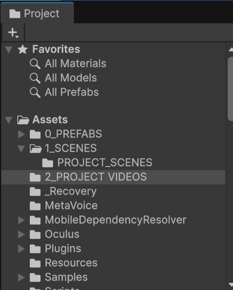
Figure 3.1: Locate the Project Videos folder
✓ Expected result
The 2_PROJECT VIDEOS folder is selected in the Project panel.
1.2 Import the Video Files
Right-click the gray area on the right side of the Project panel and select Import New Asset. Select the video files from your computer.
View screenshot
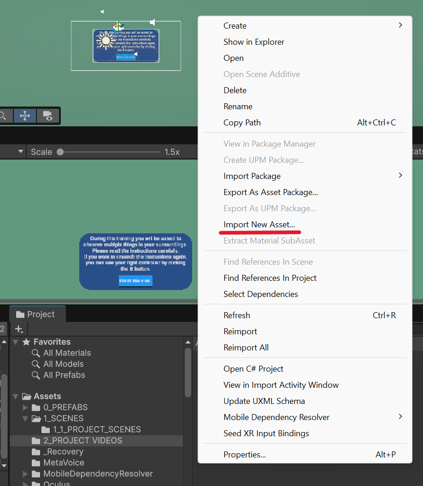
Figure 3.2: Import video files into Unity
✓ Expected result
Unity begins importing the selected video files.
1.3 Wait for the Import to Finish
Wait for Unity to finish importing and processing the selected video files.
✓ Expected result
All selected video files have been imported into Unity.
1.4 Rename the Videos
Rename each video according to its position in the training sequence.
Tip: Use short, descriptive filenames that reflect the order of the videos in your training.
For example:
01_video_step_1
02_video_step_2
03_video_step_2.1✓ Expected result
Each video has a unique and descriptive name that reflects its position in the training sequence.
1.5 Verify the Imported Videos
Select the 2_PROJECT VIDEOS folder in the Project panel and verify that all the videos intended for the training are present.
View screenshot
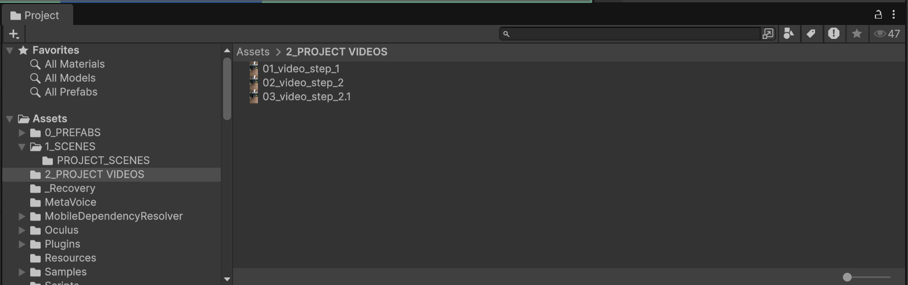
Figure 3.3: Verify imported video files
✓ Expected result
All videos intended for the training are visible in the Project panel.
1.6 Save Your Progress
Navigate to the Unity menu bar and select:
File > Save
✓ Expected result
Changes to the current scene have been saved.
Step 2: Create a New Scene
Create a new scene for each video in the training.
Important: In this project template, each scene corresponds to one video — so the number of scenes must match the number of videos you imported. For example, if you have three videos, the training will consist of three separate scenes.
- Locate the Project panel and open the following path:
Assets > 1_SCENES > 1_1_PROJECT_SCENES
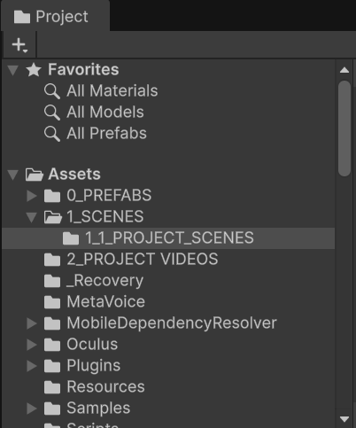
Figure 3.4: Locate Scenes Path
- Check that you see the following pre-built scenes:
0_STARTING SCENE,1_FIRST_SCENE, andLAST SCENEon the right side of the Project panel.
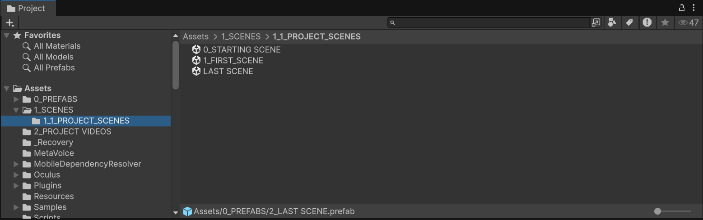
Figure 3.5: Create Scenes
To create your first scene you will use the
1_FIRST_SCENEas a template. Right-click in it and rename to your convenience.If you have more scenes, just copy and paste the same scene and rename accordingly
TIP: Just like you did when you imported the videos, it is good practice to use a sequence number and a descriptive title to keep the scenes organized.
For example:
01_scene_introduction
02_scene_demonstration
03_scene_practice- To write the content of the training instructions (e.g., In this training you will be asked to complete …) locate the Hierarchy panel and open the path:
SCENE START > TRAINING_INTRODUCTION
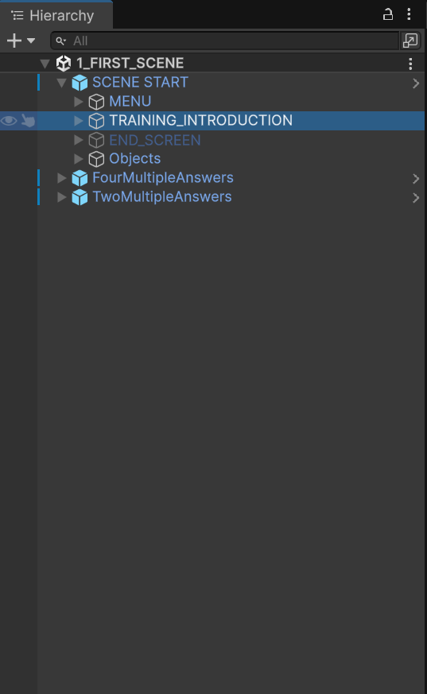
Figure 3.6: Locate Path
- Locate the Inspector panel (at the right of the Hierarchy panel), and write the content of the instructions in the text box below the Header Text title.
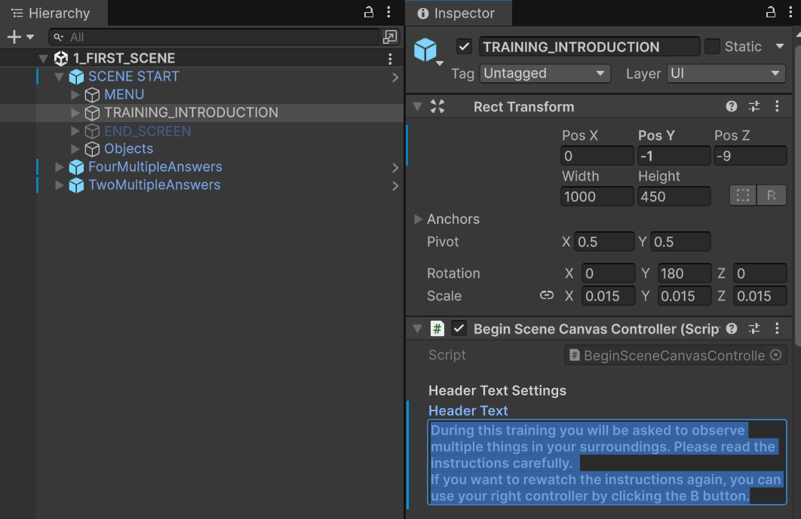
Figure 3.7: Write Training Instructions
- Save the progress. File > Save
Step 3: Add a Video to the Scene
Once you have renamed the scene, you are going to assign its corresponding video.
- Locate the scene you want to add the video to and double-click it to open it.
Important: Double-clicking is required to open a scene — a single click is not enough. To confirm a scene is open, check that its name matches the name shown at the top of the Hierarchy panel.
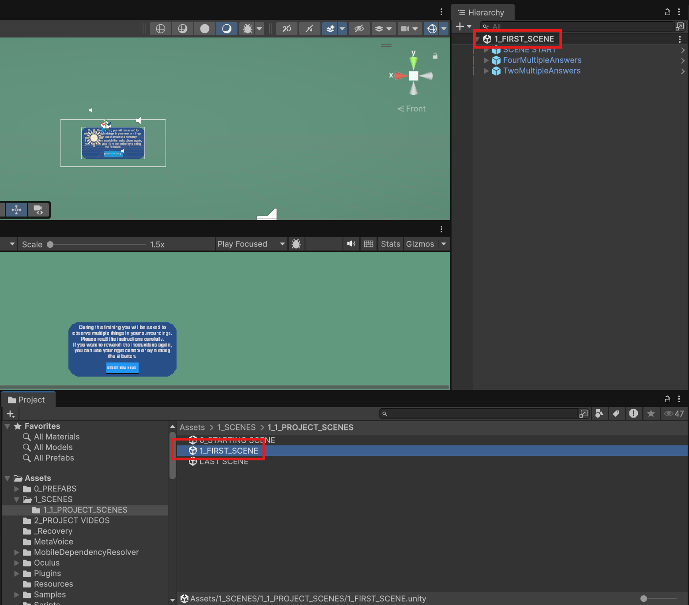
Figure 3.8: Check Scene Name
- In the Hierarchy panel, open the following path:
SCENE START > MENU > VIDEO_PLAYER
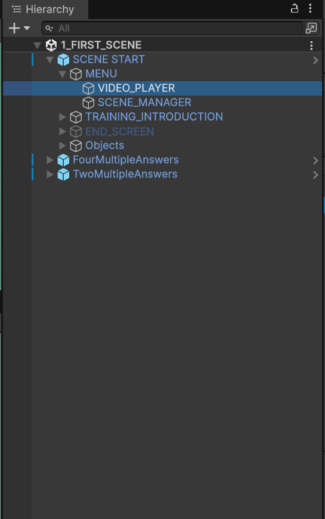
Figure 3.9: Locate Path
- Locate the Inspector panel, and in the Video Clip sub section click in the circle icon.
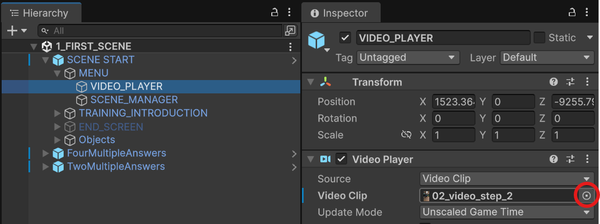
Figure 3.10: Upload Videos
- Select the video clip you want to use from the window that appears.
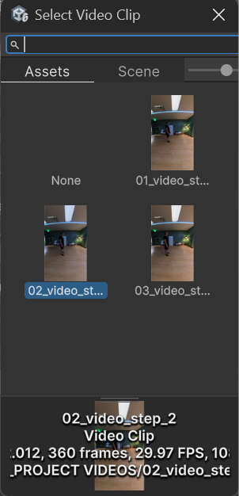
Figure 3.11: Select Video
- Confirm that the video appears by double-clicking on it
- Save the progress. File > Save
Step 4: Set Up the Questions
In this section, you will set up the following for the scene you just created:
- The instructions for each question
- The content of each question
- The content of the multiple-choice answers
- Which answer is correct
- The correct feedback (shown when the participant answers correctly)
- The corrective feedback (shown when the participant answers incorrectly)
- Locate the Project panel and open the path:
Assets > 0_PREFABS
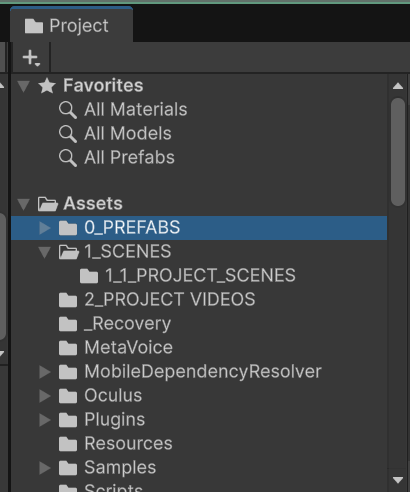
Figure 3.12: Locate Path
- Drag one of the prefabs: question_four_multiple_answers or question_four_multiple_answers (depending on the type of question you want) into the gray area of the Hierarchy panel.
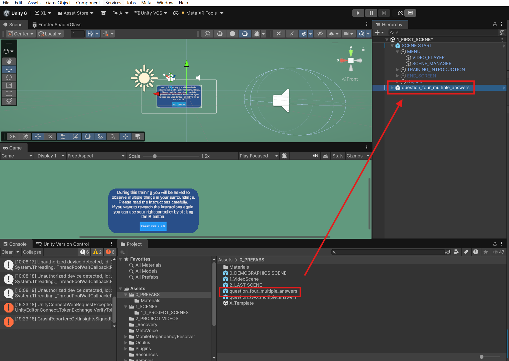
Figure 3.13: Drag Question
- Click the question prefab, then locate the Inspector panel and the subsection EDIT EVERYTHING BELOW THIS.
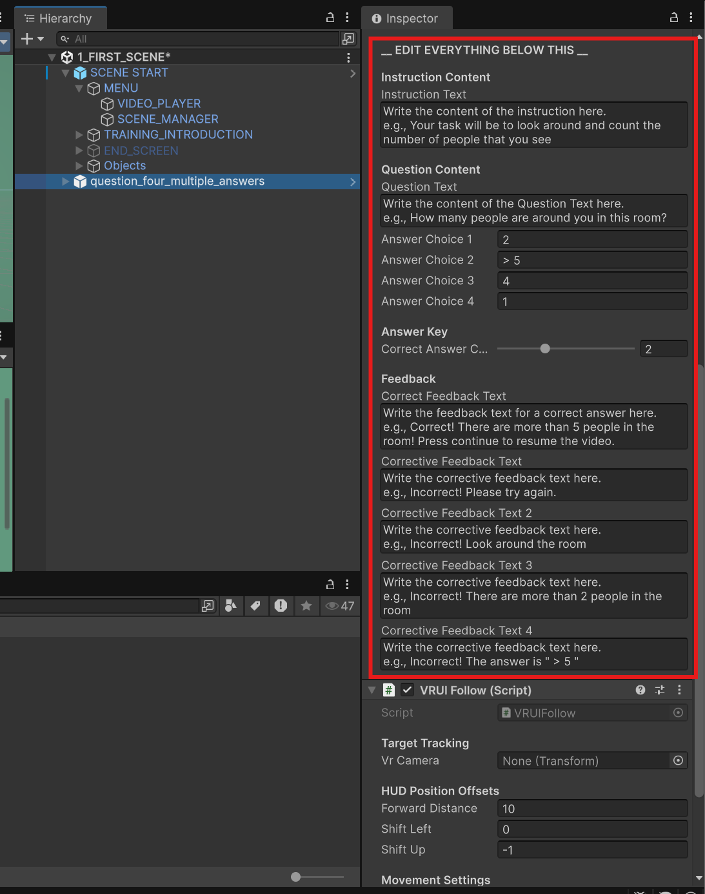
Figure 3.14: Edit Question Content
- Edit the question content. See the table below for more indications.
| FIELD | WHAT TO DO |
|---|---|
| INSTRUCTION TEXT |
Replace Write the content of the instructions here.
|
| QUESTION TEXT |
Replace Write the content of the question here.
|
| ANSWER CHOICES |
Write the content of each answer in its corresponding Answer Choice #field.
|
| CORRECT-ANSWER FEEDBACK |
Replace Write your correct feedback here.
|
| CORRECTIVE-ANSWER FEEDBACK |
Replace Write your corrective feedback here.
|
- To select the correct answer, enter its corresponding number in the
Correct Answer Choice field
In the image below, you will observe that the correct question for the answer How many people are around you in this room? is >5 that corresponds to the Answer Choice 2 which is already selected in the answer key
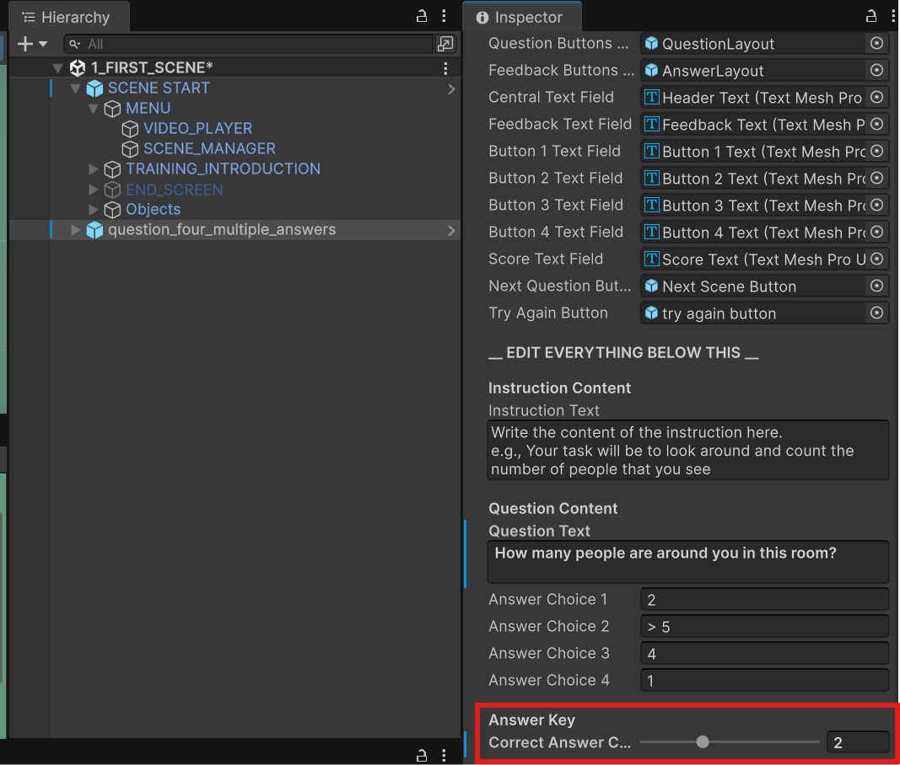
Figure 3.15: Choose Correct Answer
- Repeat Steps 1–5 to add additional questions in the scene.
Note: If you have to provide more detailed corrective feedback when the participant answers the same question incorrectly multiple times, you can enter additional feedback in the
Corrective Feedback Text 2,Corrective Feedback Text 3, andCorrective Feedback Text 4fields. The software will show the corrective feedback 2 upon the second time the client answers wrong, and so on.
- Save the progress. File > Save
Step 4.1: Set up Question Order and Timing
- Locate Hierarchy panel and open the path
SCENE START > MENU > SCENE MANAGER
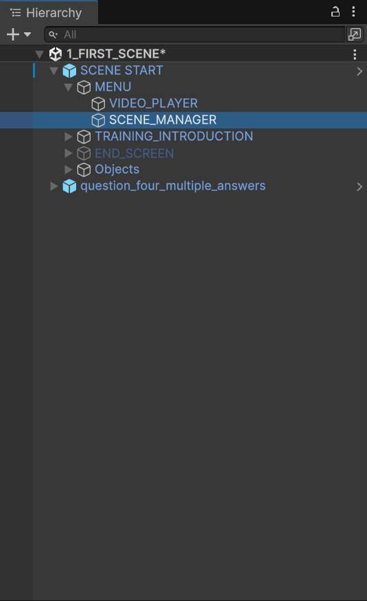
Figure 3.16: Locate Path
- Locate the Inspector panel and look for the Dynamic Sequence Setup section.
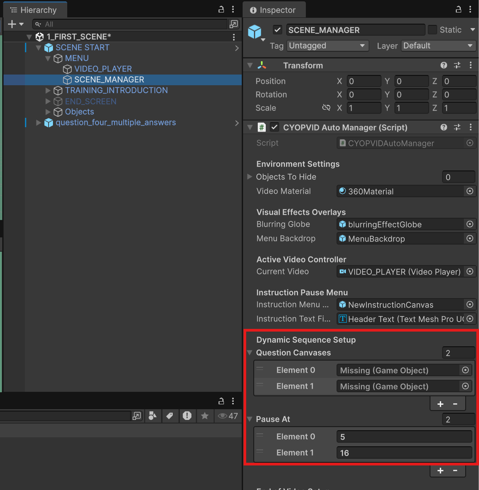
Figure 3.17: Set up Question order and timing
You will see two different panels. The Question Canvases and Pause At. The table bellow provides a description of each.
| LIST | PURPOSE |
|---|---|
| QUESTION CANVASES | Determines the order in which the questions are presented. |
| PAUSE AT | Determines the time in the original video at which the question will be presented. |
Step 4.2: Configure Question Canvases
Step 4.2.1 Configure the Questions Order
Change the number right to Question Canvases to the number of questions that the scene will have.
Drag the questions objects that you have from the Hierarchy panel to the Question Canvases. The order in which the question objects (e.g., question_four_multiple_answers) is displayed bellow the panel is the order in which the questions are shown in the video.
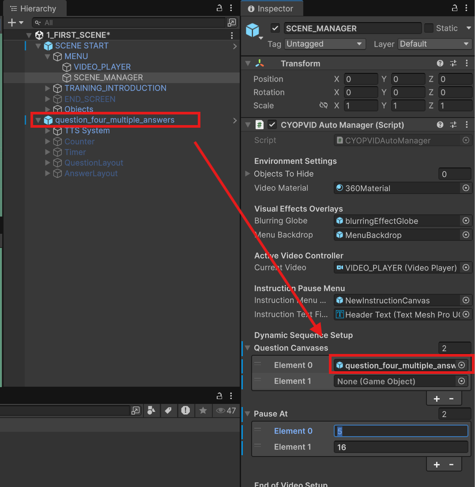
Figure 3.18: Upload Questions in Scenes
- If you have more questions, drag them in their corresponding section.
Step 4.2.2 Configure the Times in which the Questions will Appear
- Change the number right to Pause At to the number of questions that the scene will have. The number should be the same as the number you wrote in Question Canvases !.
- Write the time in the video where the questions should appear. Take into account that the numbers are in second, and they should correspond to the seconds in the Video. If you want the question to appear in the min 2:04 you should write 124.
For example:
| Item | Will Appear |
|---|---|
| 0 | 60 seconds |
| 1 | 120 seconds |
| 2 | 180 seconds |
In this example, there different questions will appear at 1:00, 2:00, and 3:00 minutes. The first and last one are of four multiple answers and the second one is of two multiple answers.
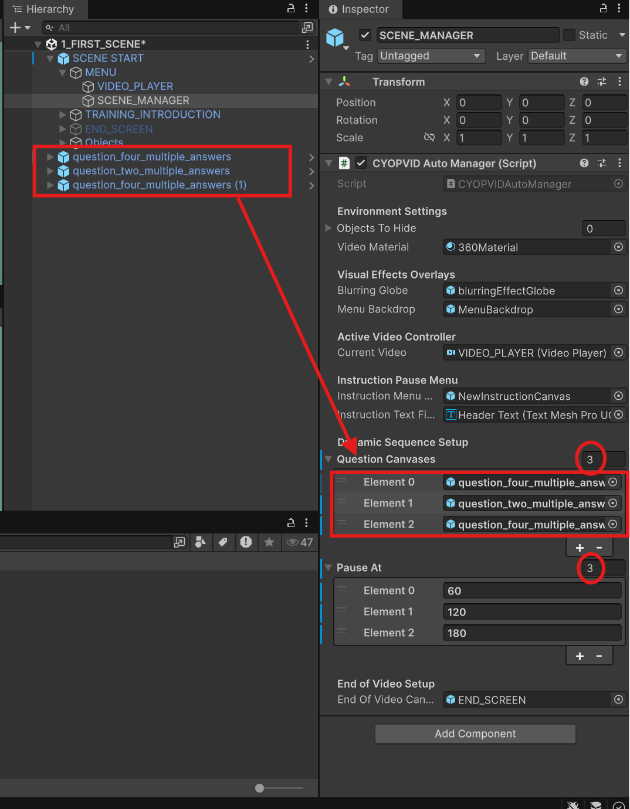
Figure 3.19: Three questions for Scene
Step 4.3: Verify that the scenes are connected
- In the Project panel, go to Assets > 1_SCENES > 1_1_PROJECT_SCENES and double-click the video scene you want to configure.
- In the Hierarchy, expand SCENE START and select END_SCREEN.
- In the *Inspector, find End Screen Scene Controller > Scene Settings > Link To Next Scene**.
- In the Link To Next Scene field, enter the exact name of the scene that the Next Scene button should open. For the final video scene, enter LAST SCENE.
- Press Ctrl+S to save.
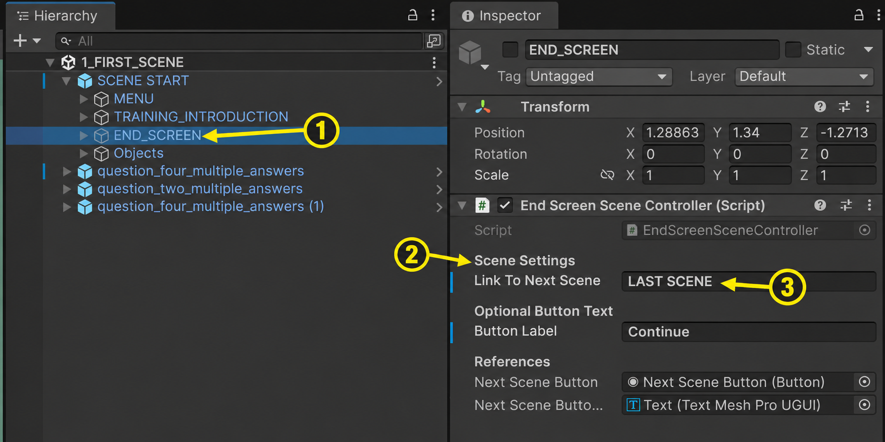
Figure 3.20: Link Scenes
Expected result: After the destination scene is enabled in the build profile, pressing Next Scene on the video’s end screen opens that scene.
Step 5: Verify the Question Order
Before continuing, confirm that:
- Every pause time has a corresponding question canvas.
- The pause times are arranged chronologically.
- The question canvases are arranged in the intended order.
- The number of items in both lists is identical.
- Each question is associated with the correct point in the video.
Warning: Questions may appear at the wrong times when the order of the question canvases does not match the order of the pause times (Step 4.2)
Step 6: Edit the Beginning Screen
The beginning screen introduces the training before the video starts.
- In the Project panel, double-click on 0_STARTING SCENE
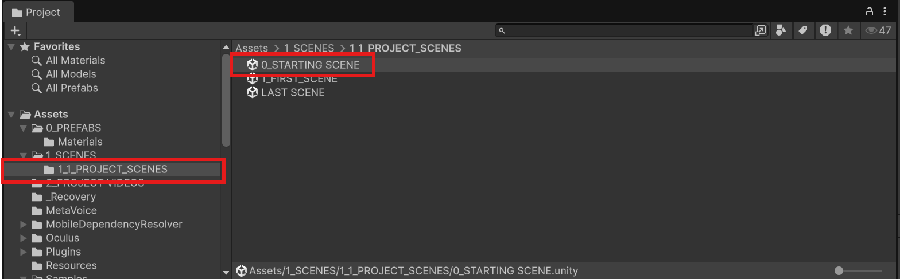
Figure 3.21: Find Starting Scene
- Locate BeginSceneCanvas in the Hierarchy panel and expand Menu the canvas to locate Header Text.
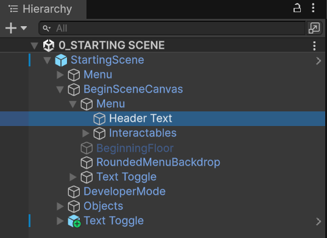
Figure 3.22: Locate Header Text
- In the Inspector panel, find the section TextMeshPro - Text (UI) (you might have to scroll down) ], and replace the existing text with the introduction for your training. You can double check the text in the Scene panel
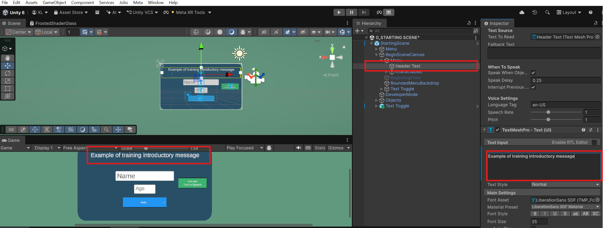
Figure 3.23: Change Training Title
For example:
Welcome to the caregiver training. In this module, you will observe a caregiver responding to a child during a daily routine.
Tip: Keep the introduction brief, easy to read, relevant and consistent with the purpose of the training.
- Save the scene.
Step 7: Check the End Screen
Check the destination you set in Step 4.3 for each video scene.
- In the Project panel, double-click the video scene you want to check.
- In the Hierarchy, expand
SCENE STARTand selectEND_SCREEN. - In the Inspector, find End Screen Scene Controller > Scene Settings > Link To Next Scene. Enter the exact name of the next scene, without the
.unityextension. For the final video scene, enterLAST SCENE. - If you made a change, press Ctrl+S to save.

Figure 3.24: Select END_SCREEN, find Scene Settings, and check Link To Next Scene
✓ Expected result
Link To Next Scene displays the destination. The learner presses the end-screen button to open it. The button reads Continue in this example.
Step 8: Add the Scene to the Build Profile
Add each new video scene to the Scene List used by your active build profile.
- In the Project panel, double-click the new video scene to open it.
- Go to File > Build Profiles.
- Select the active platform or profile and click Open Scene List.
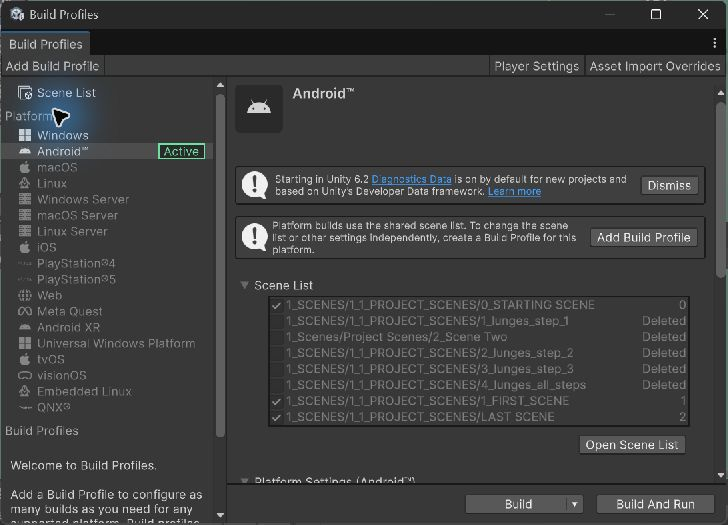
Figure 3.25: Click Open Scene List in Build Profiles
- If the scene is missing from the list, click Add Open Scenes.
- Confirm that its checkbox is selected. Check that
0_STARTING SCENE, every video scene used in your training, andLAST SCENEare enabled.
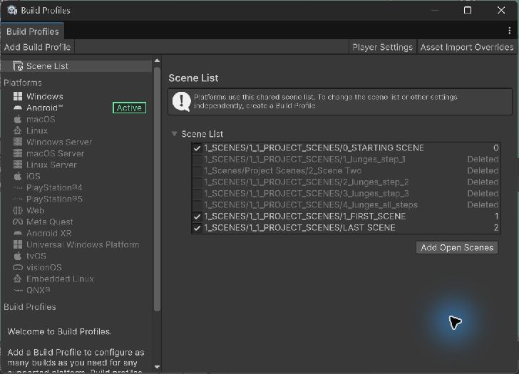
Figure 3.26: Use Add Open Scenes, then check that each required scene is enabled
✓ Expected result
Every scene in the training flow has a checked box in the active Scene List. The example shows the three enabled template scenes.
Test the connection: Close Build Profiles, open
0_STARTING SCENE, and enter Play mode. Follow the training and press the end-screen button after each video. Confirm that each button opens the intended scene and that the final video leads toLAST SCENE.